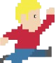

JOUONS !
INFOPGRAPHIE DU JEU VIDÉO
RÉPARTITION PAR ÂGE

32
âGE MOYEN
D'UN JOUEUR
LES JEUX VIDÉO PEUVENT VOUS AIDER à VOUS PERFECTIONNER.
 MULTITÂCHE
CRÉATIVITÉ
TRAVAIL D'ÉQUIPE
COMPÉTENCES FINANCIÈRES
MULTITÂCHE
CRÉATIVITÉ
TRAVAIL D'ÉQUIPE
COMPÉTENCES FINANCIÈRES
LES JEUX VIDÉO SONT PARFAITS POUR LES ÉCHANGES SOCIAUX
65% DES
JOUEURS JOUENT
À DES JEUX AVEC
UN AMI
COMMENCEZ À JOUER
Informations fournies par :
Sources documentaires :
 www.sitevraimentsuper.fr
www.sitevraimentsuper.fr
www.sitevraimentsuper.fr